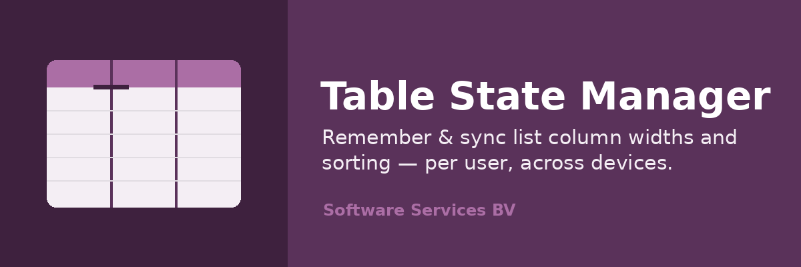
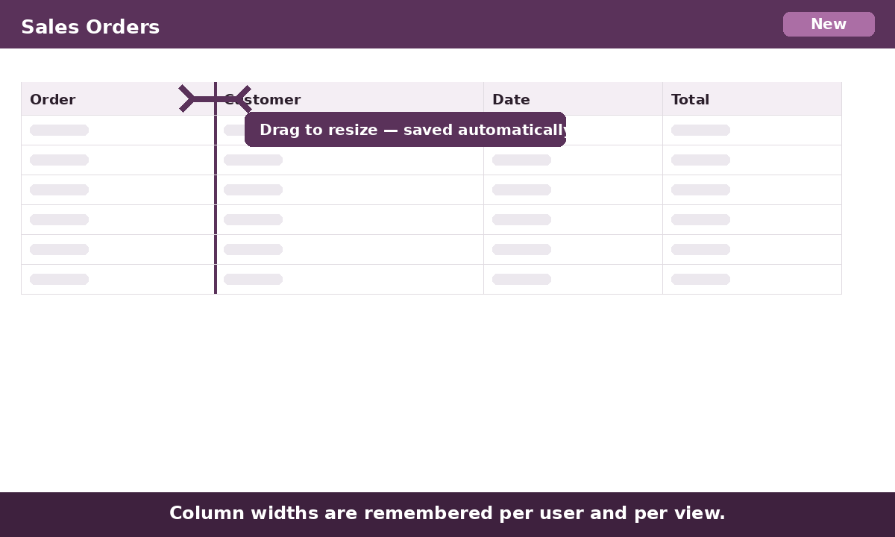
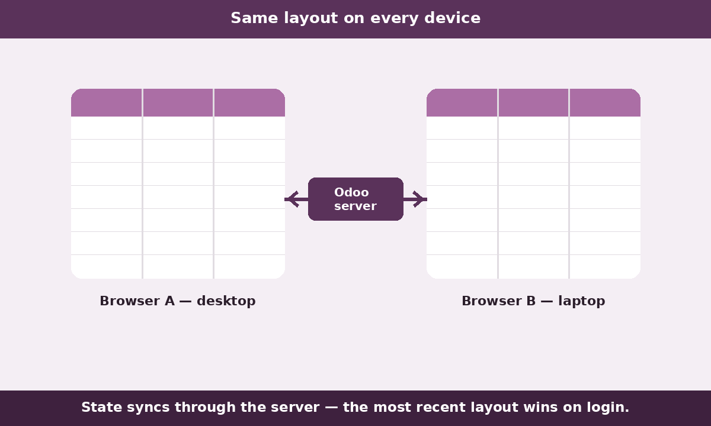
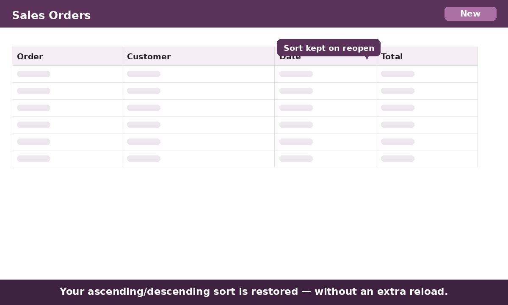

Odoo recomputes list column widths on every render and forgets them as soon as you change a filter or resize the window. Table State Manager remembers each column's width per user and per view, and re-asserts it after every render.
The ascending/descending sort you picked is remembered and re-applied when you reopen the list — without firing an extra request unless the stored order actually differs from what was loaded.

Unlike simple "remember column width" add-ons, your preferences are stored on the server as well as in the browser. Log in from another machine and your layout follows you. The most recent state wins; the browser may always push its changes up — the classic ExtJS StateManager behaviour, brought to Odoo.

The stored sort order is compared against the order the list was loaded with; a reload is only triggered when they diverge — the same cost as a single header click, never in a loop.

Install the module and start resizing. Works on every list view, including nested one2many and many2many tables. No settings, no setup.
The module stores only UI preferences — column widths and sort order — in your own Odoo database, in a record owned by each user. Nothing is sent to any third party and no external service is contacted.
Odoo partner — Belgium. Support: info@softwareservices.be · www.softwareservices.be